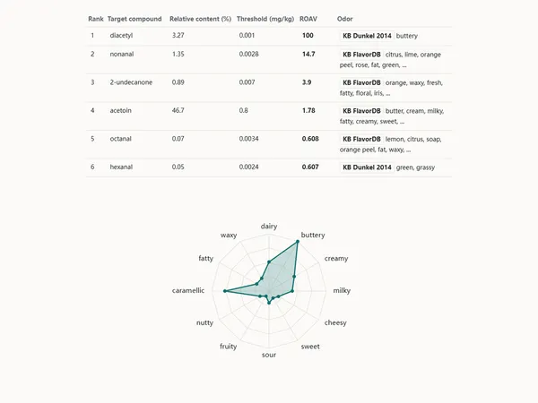
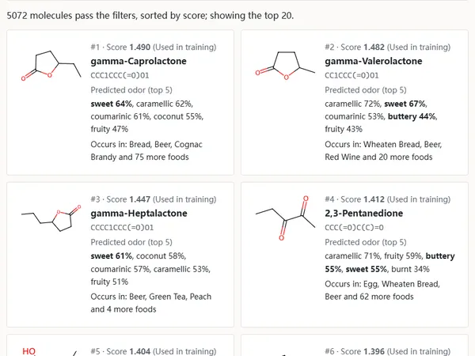
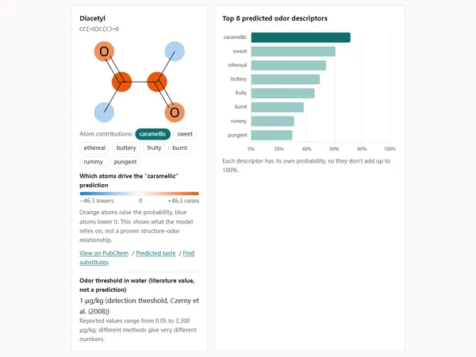
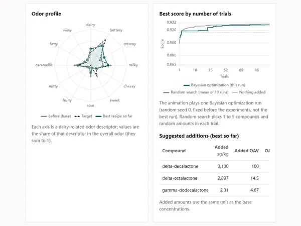
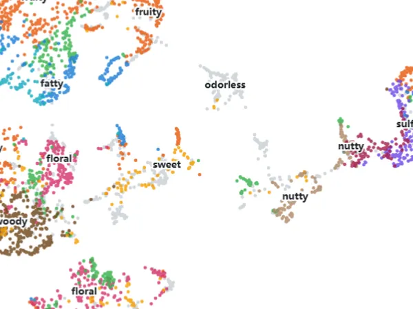
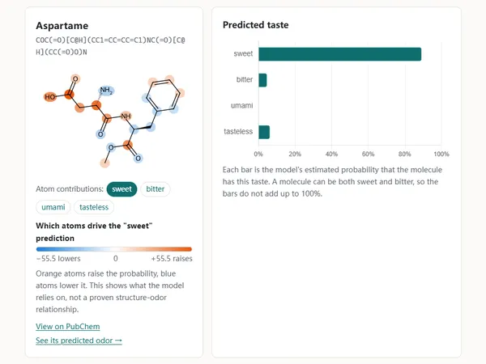
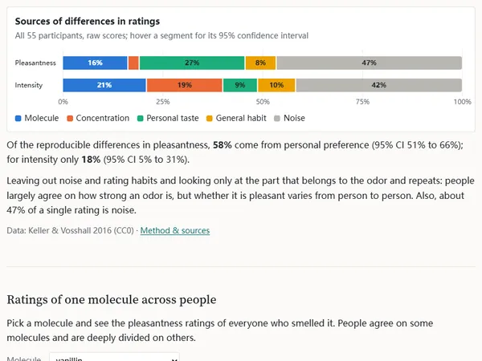
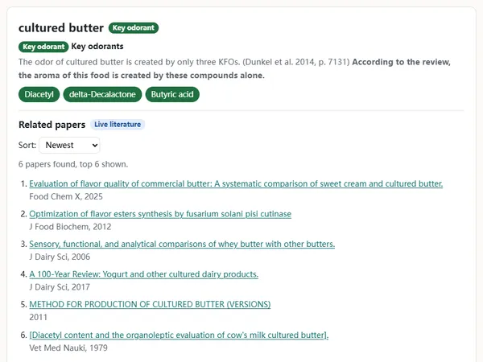

上传一个样品的 GC-MS 峰表，按 OAV 或 ROAV 排出关键风味物质；数据只在浏览器里处理。
工具方法与来源

基于想要和不想要的气味描述词检索 5000 多个分子，或给一个既定分子找与其气味相近、结构不同的替代物。

输入分子名称、CAS 号或 SMILES，图神经网络给出该分子最可能的气味描述词。

演示贝叶斯优化怎样调整乳品风味；也可以把自己的样品和目标样品对比。

5000 多个分子按预测气味排成一张可缩放的图，也可以切换成按结构排列来对比。

预测小分子是甜、苦、鲜还是无味。

基于 55 人对 480 个分子的公开评分，分析评分差异有多少来自分子、个人偏好和测量噪声。

按食品或化合物查关键风味物质、检出物质和相关文献。